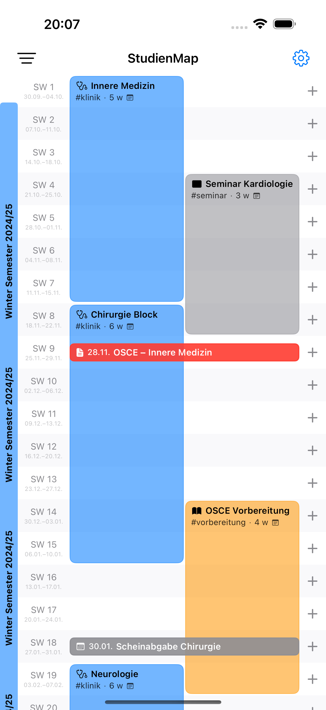
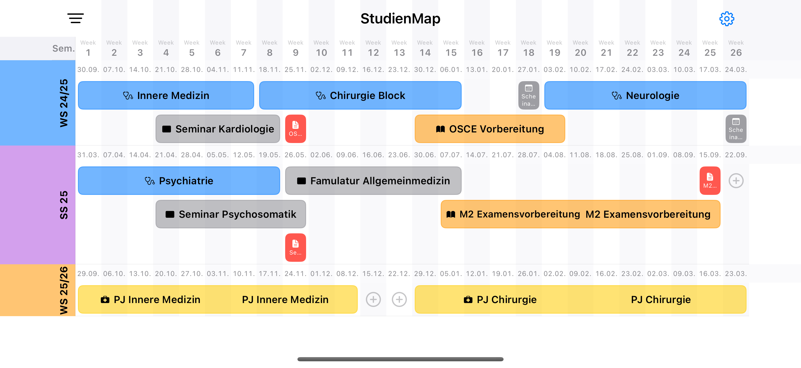
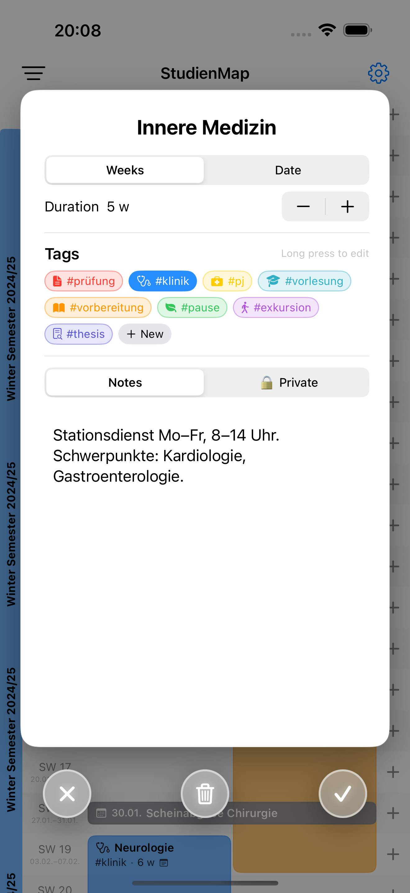
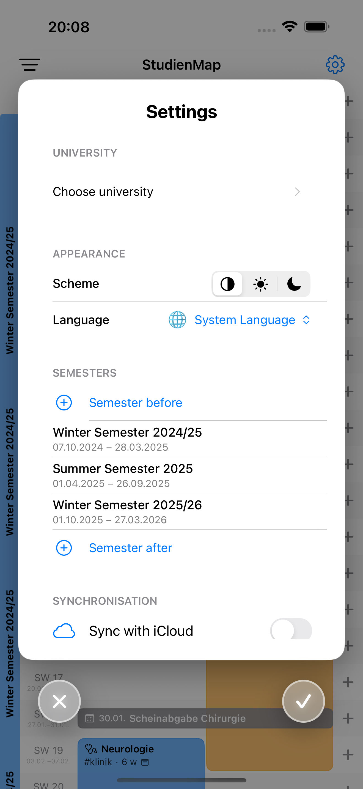
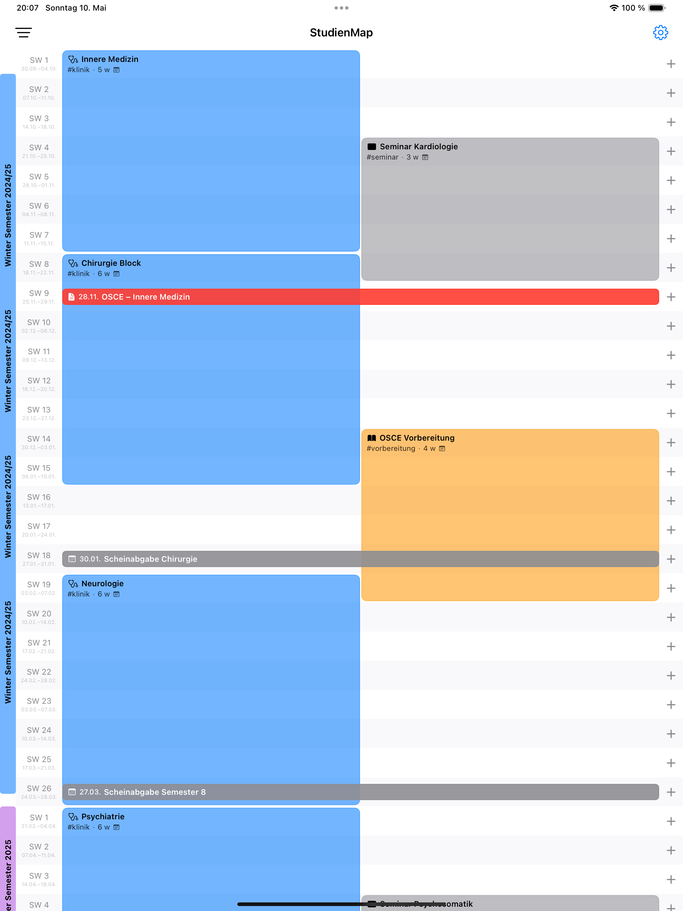
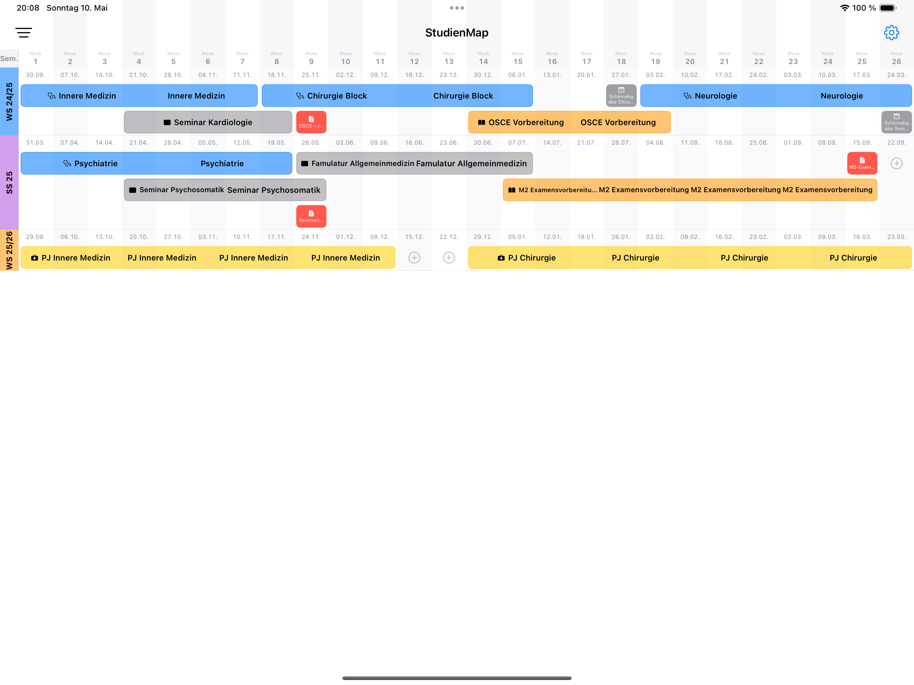
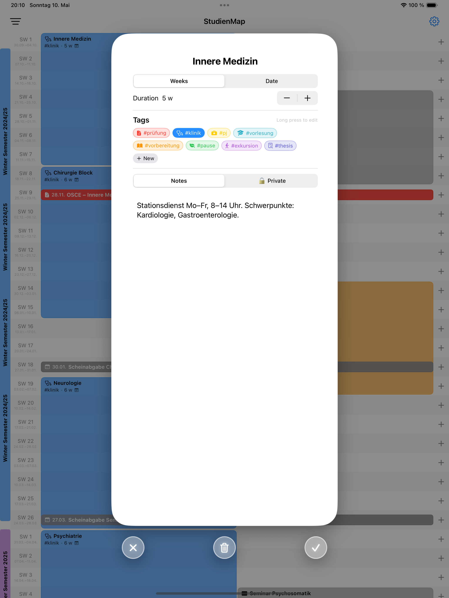
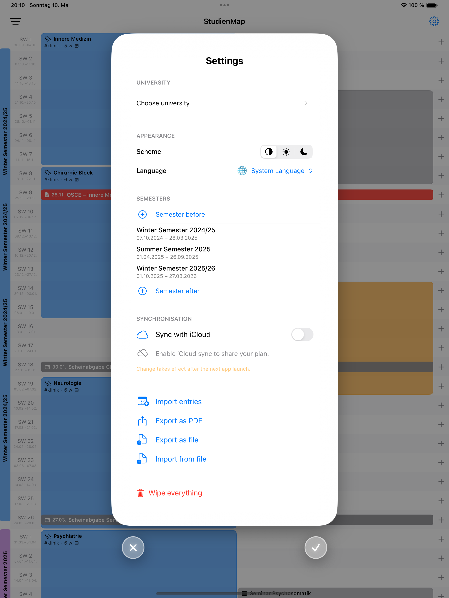

StudienMap
A long-term study planning app for iPhone and iPad.
What is StudienMap?
StudienMap helps students plan and structure longer study periods week by week. Whether you are working through a modular degree program, preparing for a series of exams, or organising a full semester, StudienMap gives you a clear, structured overview of your schedule across multiple weeks.
The app is designed to support individual, self-directed study planning. It does not give academic advice and is not affiliated with any university.
Features
- Week-by-week study planning
- Phases and date ranges
- Notes per planning entry
- Landscape overview of your full plan
- PDF export of your planning overview
- iCloud sync across your Apple devices
- iCloud sharing with selected people
- Private notes stay local on your device
- Works offline
- Free, no ads, no in-app purchases
- No account required
Privacy by design
StudienMap does not collect personal data, contains no ads, and does not use third-party analytics or tracking. Planning data can be synced across devices with Apple iCloud/CloudKit and shared with selected people via iCloud sharing. Private notes stay local on your device and are not synced or shared.
Read the full privacy policy →
Availability
StudienMap is planned for release as a free app on the Apple App Store for iPhone and iPad.
Screenshots
iPhone




iPad



